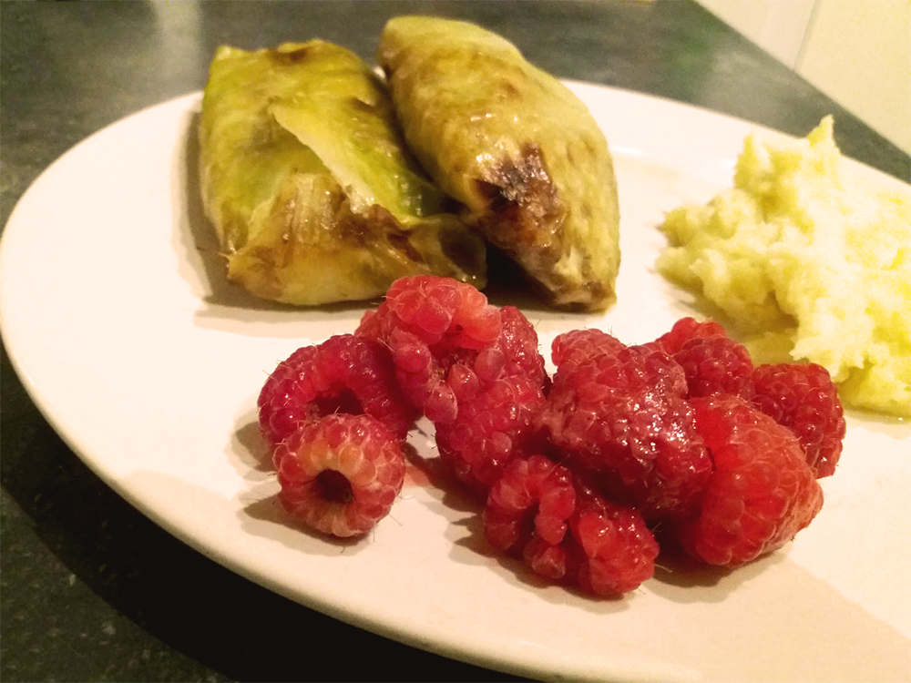

finse witte kool rolletjes
Gevulde witte koolrolletjes, in het Fins ook wel Kaldomar of Kaalikääryle genoemd. In Finland wordt dit gerecht vaak gegeten met jam. Ik heb in dit recept verse frambozen gebruikt.

Bereidingsduur: 120 minuten
Aantal personen: 4
Ingrediënten:
1 krop witte kool
300 gram rundergehakt
1 ui
1 ei
80 gram rijst
1 liter water
1 theelepel zout
1 theelepel kaneel
1 theelepel nootmuskaat
350 gram aardappelpuree
1 theelepel peper
naar smaak ahornsiroop
naar smaak melk
naar smaak rode bessen of framboos
1 krop witte kool
300 gram rundergehakt
1 ui
1 ei
80 gram rijst
1 liter water
1 theelepel zout
1 theelepel kaneel
1 theelepel nootmuskaat
350 gram aardappelpuree
1 theelepel peper
naar smaak ahornsiroop
naar smaak melk
naar smaak rode bessen of framboos
Instructies:
1. Maak de witte kool schoon. Snijd de slechte delen eraf. Leg de witte kool in het water met zout en laat het 10 minuten koken tot de bladeren zacht zijn. Haal de witte kool uit het water en leg het op een groot bord om deze te laten drogen. Haal de buitenste bladeren eraf. De binnenste bladeren snijd je af en een deel bewaar je voor de vulling.
2. Tijd voor de vulling. Kook de rijst. Pak een grote kom en mix de rijst met het vlees, ei, gesneden ui en de kruiden. Als de mix te dik is gebruik je wat witte kool water.
3. Verwarm de oven voor op 200 graden en beboter een ovenschaal. Neem een blaadje van de witte kool, doe er wat vulling in uit stap 2 en vouw de blaadjes dicht. Doe dit met meerdere blaadjes. Schenk er 1 kopje melk overheen of 1 tot 2 eetlepels siroop en bak het voor 1 uur in de oven. Ieder halfuurtje de rolletjes even omdraaien.
4. Serveer de rolletjes met de aardappelen, witte kool sap en jam/bosbessen of frambozen.
1. Maak de witte kool schoon. Snijd de slechte delen eraf. Leg de witte kool in het water met zout en laat het 10 minuten koken tot de bladeren zacht zijn. Haal de witte kool uit het water en leg het op een groot bord om deze te laten drogen. Haal de buitenste bladeren eraf. De binnenste bladeren snijd je af en een deel bewaar je voor de vulling.
2. Tijd voor de vulling. Kook de rijst. Pak een grote kom en mix de rijst met het vlees, ei, gesneden ui en de kruiden. Als de mix te dik is gebruik je wat witte kool water.
3. Verwarm de oven voor op 200 graden en beboter een ovenschaal. Neem een blaadje van de witte kool, doe er wat vulling in uit stap 2 en vouw de blaadjes dicht. Doe dit met meerdere blaadjes. Schenk er 1 kopje melk overheen of 1 tot 2 eetlepels siroop en bak het voor 1 uur in de oven. Ieder halfuurtje de rolletjes even omdraaien.
4. Serveer de rolletjes met de aardappelen, witte kool sap en jam/bosbessen of frambozen.